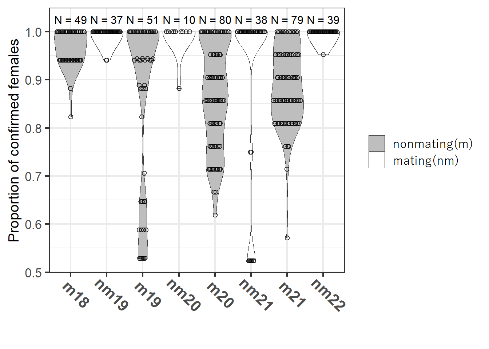
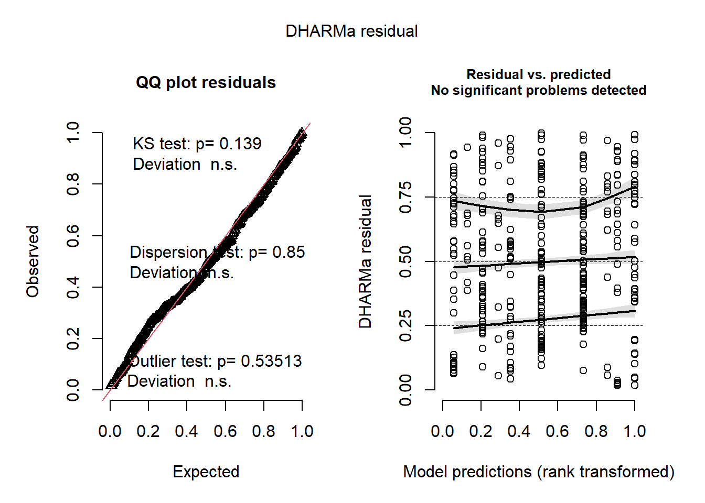
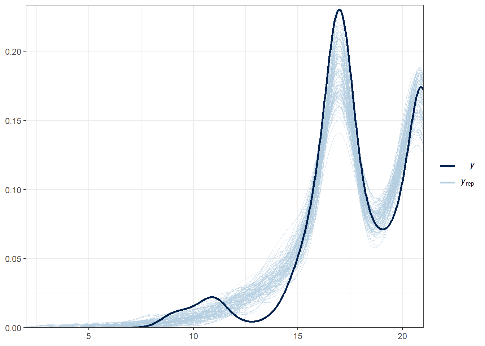
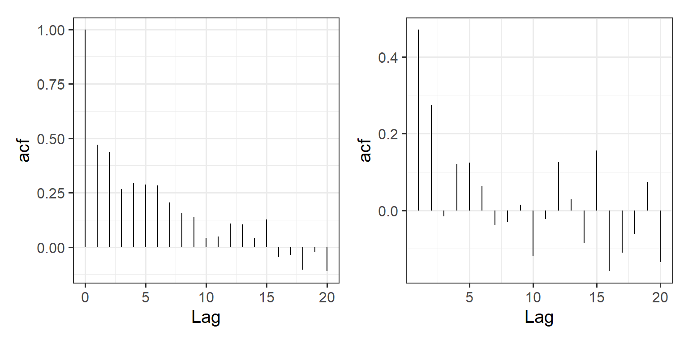
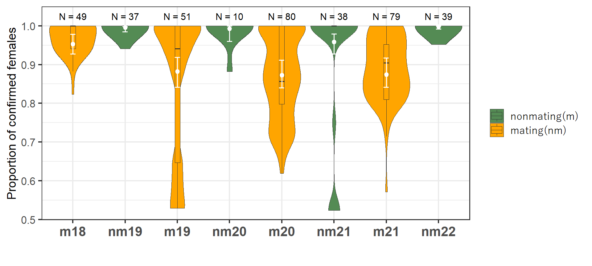
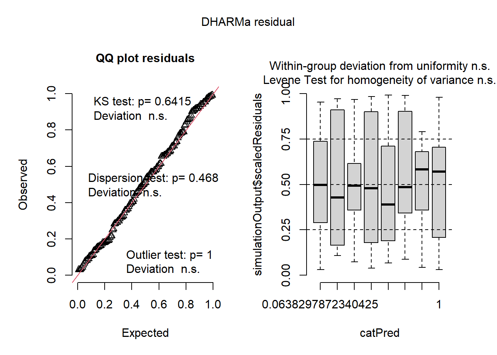

7 調査期間ごとのメスの確認状況
以下では、メスの確認状況について分析を行う。
7.1 各観察日のメス確認割合
前章(6)で、6歳以上のメス(以下、メス)が50%以上確認でき、240分以上追跡できた日のデータを抽出していた(no_female_over0.5)。以下では、1日に確認できた6歳以上のメスの割合が調査期間ごとにどのように異なっていたかを分析する。
なお、240分追跡した内、群れ本体ではない集団を追跡した割合は実に96.5%である。
prop_females_all %>%
filter(groupID != "nm21_23") %>%
## 追跡時間240分以上
filter(dur >= 240) %>%
mutate(hontai = ifelse(prop_female >= 0.5,1,0)) %>%
summarise(prop = mean(hontai))調査期間ごとに分けると以下のようになる。他の調査期間でも2021年非交尾期を除けば95%~100%の日は群れ本体を追っている。
prop_females_all %>%
filter(groupID != "nm21_23") %>%
## 追跡時間240分以上
filter(dur >= 240) %>%
mutate(hontai = ifelse(prop_female >= 0.5,1,0)) %>%
group_by(study_period) %>%
summarise(prop = mean(hontai),
N = n(),
sum = sum(hontai))7.1.1 データの確認
まず、調査期間ごとにデータを図示する。2019年交尾期から2021年交尾期までの期間に1日に確認されたメスの割合が低い日が多くなっていることが分かる(特に交尾期)。
n_days <- no_female_over0.5 %>%
group_by(study_period) %>%
summarise(N = n())
no_female_over0.5 %>%
mutate(season = ifelse(str_detect(study_period, "nm"), "nm","m")) %>%
ggplot(aes(x = study_period, y = prop_female)) +
geom_violin(aes(fill = as.factor(season)),
scale = "width",width = 0.9,
size = 0.3,bw = 0.03)+
geom_quasirandom(shape = 1,
alpha = 0.8,
size = 1.9,
stroke = 0.7,
dodge.width = 0.8)+
geom_text(data = n_days,
aes(label = str_c("N = ",N),
y = 1.025,
family = "Arial"),
size = 4) +
scale_fill_manual(values = c("grey","white"),
labels = c("nonmating(m)","mating(nm)"))+
scale_color_manual(values = c("black","black"),
labels = c("nonmating(m)","mating(nm)"))+
labs(fill = "",
y = "Proportion of confirmed females",x="")+
theme_bw(base_size = 16)+
theme(axis.title.y = element_text(family = "Arial", size = 14.5),
axis.text.x = element_text(family="Arial",
face = "bold", size = 16,
angle = -45, vjust = -0.2),
axis.title = element_text(family = "Yu Gothic",
size = 20),
legend.text = element_text(family = "Yu Gothic"),
axis.text.y = element_text(family ="Arial"))+
scale_y_continuous(breaks = seq(0,1,0.1))
7.1.2 調査期間間の比較
7.1.2.1 モデリング
以下では、ベイズモデルによって調査期間間で確認したメスの割合を比較する。モデル式は以下の通り。max_femalesは各観察日の全メス数、no_femalesは各観察日の確認メス数を表す。
\[ \begin{aligned} &no\_female_i \sim BetaBinomial(p_i, max\_female_i, \theta)\\ &logit(p_i) = \beta_0 + \beta_1 \times study\_period_i + r_i\\ &r_i \sim Normal(0, \sigma)\\ &\beta_0 \sim student\_t(4,0,10)\\ &\beta_1 \sim student\_t(4,0,10)\\ &\sigma \sim student\_t(4,0,5) \end{aligned} \]
m_female_prop <- brm(data = no_female_over0.5 %>% mutate(date=as.factor(date)),
no_female|trials(max_female) ~ study_period + (1|date),
family = "beta_binomial",
prior = c(prior(student_t(4,0,10),class = Intercept),
prior(student_t(4,0,10), class = b),
prior(student_t(4,0,5), class = sd)),
iter = 11000, warmup = 6000, seed = 13,
control=list(adapt_delta = 0.9999, max_treedepth = 20),
backend = "cmdstanr",
file = "model/m_female_prop")7.1.2.2 モデルチェック
続いて、モデルチェックを行う。まず、DHARMaパッケージ(Hartig, 2022)とDHARMa.helperパッケージ(Rodríguez-Sánchez, 2023)でモデルの前提が満たされているかを確認する。特に問題はないよう。

bayesplotパッケージ(Gabry & Mahr, 2022)のpp_check関数で、事後分布からの予測分布と実測値の分布を比較しても大きな乖離はない。

ただし、残差には時系列相関があることがわかり、可能であれば考慮した方がよい。
## 残差の算出
resid_female_prop <- no_female_over0.5 %>%
mutate(resid = dh_female_prop$scaledResiduals) %>%
complete(date = seq.Date(min(date), max(date), by = "1 day"))
## 自己相関の算出
acf_female_prop <- acf(x = resid_female_prop$resid,
lag.max = 20,
na.action = na.pass,
plot = F)
pacf_female_prop <- pacf(x = resid_female_prop$resid,
lag.max = 20,
na.action = na.pass,
plot = F)
## 図示
data.frame(Lag = acf_female_prop$lag[,,1],
acf = acf_female_prop$acf[,,1]) %>%
ggplot(aes(x = Lag, y = acf))+
geom_segment(aes(yend = 0, xend = Lag))+
theme_bw(base_size = 15)+
theme(aspect.ratio = 1) -> p_acf_female_prop
data.frame(Lag = pacf_female_prop$lag[,,1],
acf = pacf_female_prop$acf[,,1]) %>%
ggplot(aes(x = Lag, y = acf))+
geom_segment(aes(yend = 0, xend = Lag))+
theme_bw(base_size = 15)+
theme(aspect.ratio = 1) -> p_pacf_female_prop
p_acf_female_prop_com <- p_acf_female_prop + p_pacf_female_prop
p_acf_female_prop_com
# ggsave("figures/p_acf_female_prop_com.png",
# p_acf_female_prop_com, width = 240, height = 100,
# dpi =600, units = "mm")DHARMaパッケージで調べても、時系列相関が検出された。
dh_female_prop <- dh_check_brms(m_female_prop, plot = FALSE)
testTemporalAutocorrelation(dh_female_prop, time = no_female_over0.5$date)##
## Durbin-Watson test
##
## data: simulationOutput$scaledResiduals ~ 1
## DW = 1.1194, p-value < 2.2e-16
## alternative hypothesis: true autocorrelation is not 07.1.2.3 結果の確認
まず、モデルの結果は以下の通り。収束の問題は内容。有向サンプルサイズ(ESS)は1000を下回っているものがいくつかある。
model_parameters(m_female_prop) %>%
data.frame() %>%
select(1,3,5,6,7,8,9) %>%
mutate(across(where(is.numeric),~round(.,2)))続いて、多重比較を行う。
estimate_contrasts(m_female_prop, contrast = "study_period", ci = 0.95) %>%
data.frame() -> cont_female_prop
cont_female_prop %>%
mutate(across(where(is.numeric),~round(.,2)))結果をまとめたのが下の表である。2019~2021年の交尾期は、その他の期間に比べて有意に確認メス割合が低いことが分かる。
cont_female_prop %>%
mutate(p = ifelse(CI_low*CI_high >0, "***","n.s")) %>%
select(Level1,Level2,p) %>%
pivot_wider(names_from = Level2,
values_from = p) %>%
column_to_rownames(var = "Level1")7.1.2.4 結果の図示
モデルの結果と実データを合わせてプロットすると以下のようになる。
mean_female_prop <- estimate_means(m_female_prop, at = "study_period") %>%
data.frame()
no_female_over0.5 %>%
mutate(season = ifelse(str_detect(study_period, "nm"), "nm","m")) %>%
mutate(season = fct_relevel(season, "nm","m")) %>%
ggplot(aes(x = study_period, y = prop_female)) +
geom_violin(aes(fill = as.factor(season)),
scale = "width",width = 0.9,
size = 0.3,bw = 0.03)+
geom_text(data = n_days,
aes(label = str_c("N = ",N),
y = 1.025,
family = "Arial"),
size = 4) +
geom_boxplot(aes(fill = as.factor(season)),
width = 0.1,
outlier.shape = NA,
size = 0.3) +
geom_pointrange(data = mean_female_prop %>% filter(!str_detect(study_period,"NM")),
aes(y = Probability, ymin = CI_low,ymax = CI_high),
color = "white",size = 0.4)+
geom_errorbar(data = mean_female_prop%>% filter(!str_detect(study_period,"NM")),
aes(y = Probability, ymin = CI_low,ymax = CI_high),
color = "white",width = 0.1,size=0.6)+
scale_fill_manual(values = c("palegreen4","orange"),
label = c("nonmating(m)","mating(nm)"))+
scale_color_manual(values = c("palegreen4","orange3"),
label = c("nonmating(m)","mating(nm)"))+
labs(fill = "",
y = "Proportion of confirmed females",x="")+
theme_bw(base_size = 16)+
theme(axis.title.y = element_text(family = "Arial", size = 14.5),
axis.text.x = element_text(family="Arial",
face = "bold", size = 16),
axis.title = element_text(family = "Arial",
size = 23),
legend.text = element_text(family = "Yu Gothic"),
axis.text.y = element_text(family ="Arial"))+
scale_y_continuous(breaks = seq(0,1,0.1)) -> p_female_prop
p_female_prop
# ggsave("figures/p_female_prop.png",p_female_prop, dpi = 600,
# width = 225, height = 110, units = "mm")mean_female_prop_m <- estimate_means(m_female_prop, at = "study_period") %>%
data.frame() %>%
filter(!str_detect(study_period,"nm"))
no_female_over0.5 %>%
mutate(season = ifelse(str_detect(study_period, "nm"), "nm","m")) %>%
mutate(season = fct_relevel(season, "nm","m")) %>%
filter(season != "nm") %>%
ggplot(aes(x = study_period, y = prop_female)) +
geom_violin(fill = "orange",
scale = "width",width = 0.9,
size = 0.3,bw = 0.03)+
geom_text(data = n_days %>% filter(!str_detect(study_period,"nm")),
aes(label = str_c("N = ",N),
y = 1.025,
family = "Arial"),
size = 6) +
geom_boxplot(width = 0.1,
outlier.shape = NA,
size = 0.3,
fill = "orange3") +
geom_pointrange(data = mean_female_prop_m,
aes(y = Probability, ymin = CI_low,ymax = CI_high),
color = "white",size = 0.4)+
geom_errorbar(data = mean_female_prop_m ,
aes(y = Probability, ymin = CI_low,ymax = CI_high),
color = "white",width = 0.1,size=0.6)+
labs(fill = "",
y = "Proportion of confirmed females",x="")+
theme_bw(base_size = 18)+
theme(axis.title.y = element_text(family = "Arial", size = 14.5),
axis.text.x = element_text(family="Arial",
face = "bold", size = 19),
axis.title = element_text(family = "Arial",
size = 23),
legend.text = element_text(family = "Yu Gothic"),
axis.text.y = element_text(family ="Arial",
size = 20))+
scale_y_continuous(breaks = seq(0,1,0.1)) -> p_female_prop_m
p_female_prop_m7.2 メスごとの確認日数割合
続いて、メスごとの確認に数割合を調査期間ごとに調べる。
7.2.1 データの加工
メスごとに各調査期間ごとの確認に数割合を算出する。なお、2019年交尾期以降のKurと2021年非交尾期以降のTamは死亡したので除く。
no_female_over0.5 %>%
select(groupID) %>%
left_join(group_all %>% select(-c(TY,IT,KR,LK,KM,TG))) %>%
## 縦型にする
pivot_longer(Kur:Yun,
names_to = "femaleID",
values_to = "presence") %>%
left_join(att, by = c("femaleID", "study_period")) %>%
## 6歳以上のみ抽出
filter(age >= 6) %>%
drop_na(presence) %>%
## 算出
group_by(study_period, femaleID) %>%
summarise(sum = n(),
n = sum(presence)) %>%
ungroup() %>%
mutate(prop_presence= n/sum) %>%
## 2019年交尾期のKurと2021年非交尾期のTamを除く
filter(!((femaleID == "Kur" & study_period == "m19")|(femaleID == "Tam" & study_period == "nm21"))) %>%
mutate(study_period = fct_relevel(study_period, "m18","nm19","m19","nm20",
"m20","nm21","m21","nm22")) -> prop_female_presenceデータは以下のようになる。
7.2.2 データの確認
まず、データを確認する。2019年交尾期から2021年交尾期までは、確認に数割合が低いメスがかなりいることが分かる。
prop_female_presence %>%
ggplot(aes(x = femaleID, y = prop_presence)) +
geom_col() +
theme_bw(base_size = 11)+
labs(x="",
y = "Proportion of confirmed days")+
theme(axis.text.y = element_text(family= "Arial"),
axis.title.y = element_text(family = "Arial"),
axis.text.x = element_text(family = "Arial",
face = "italic"),
strip.background = element_blank(),
strip.text.x = element_text(hjust=0,
family = "Arial",
size = 11))+
coord_cartesian(ylim = c(0,1.2))+
scale_y_continuous(expand = c(0,0),
breaks = seq(0,1,0.25))+
geom_text(aes(label = str_c(n,"/",sum),
y = prop_presence+0.1),
family = "Arial",
size = 2.5)+
facet_rep_wrap(~study_period, repeat.tick.labels = T,
ncol = 2) 7.2.3 調査期間間の比較
7.2.3.1 モデリング
以下では、ベイズモデルによって調査期間間でメスの確認日数割合に違いがあるかを調べる。モデル式は以下の通り。\(i\)はデータ番号を、\(j\)はメスIDを表す。また、max_dateは各観察期間の観察日数、no_presentはそのうちそのメスが確認されたかを数を表す。
\[ \begin{aligned} &no\_present_{i} \sim BetaBinomial(p_{i}, max\_date_{i})\\ &logit(p_{i}) = \beta_0 + \beta_1 \times study\_period_{i} + r_{i} + \gamma_j \\ &r_{i} \sim Normal(0, \sigma_{r})\\ &\gamma_j \sim Normal(0, \sigma_{\gamma})\\ &\beta_0 \sim student\_t(4,0,10)\\ &\beta_1 \sim student\_t(4,0,10)\\ &\sigma \sim student\_t(4,0,5) \end{aligned} \]
m_female_presence <- brm(data = prop_female_presence %>% mutate(N = 1:n()),
n|trials(sum) ~ study_period + (1|femaleID),
family = "beta_binomial",
prior = c(prior(student_t(4,0,10),class = Intercept),
prior(student_t(4,0,10), class = b),
prior(student_t(4,0,5), class = sd)),
iter = 11000, warmup = 6000, seed = 13,
control=list(adapt_delta = 0.9999, max_treedepth = 20),
backend = "cmdstanr",
file = "model/m_female_presence")7.2.3.2 モデルチェック
続いて、モデルチェックを行う。まず、DHARMaパッケージでモデルの前提が満たされているかを確認する。

pp_check関数で、事後分布からの予測分布と実測値の分布を比較しても大きな乖離はない。
7.2.3.3 結果の確認
まず、モデルの結果は以下の通り。収束の問題はないよう。
model_parameters(m_female_presence) %>%
data.frame() %>%
select(1,3,5,6,7,8,9) %>%
mutate(across(where(is.numeric),~round(.,2)))続いて、多重比較を行う。
estimate_contrasts(m_female_presence, contrast = "study_period", ci = 0.95) %>%
data.frame() -> cont_female_presence
cont_female_presence %>%
mutate(across(where(is.numeric),~round(.,2)))結果をまとめたのが下の表である。
cont_female_presence %>%
mutate(p = ifelse(CI_low*CI_high >0, "***","n.s")) %>%
select(Level1,Level2,p) %>%
pivot_wider(names_from = Level2,
values_from = p) %>%
column_to_rownames(var = "Level1")7.2.3.4 結果の図示
モデルの結果と実データを合わせてプロットすると以下のようになる。
mean_female_presence <- estimate_means(m_female_presence, at = "study_period") %>%
data.frame()
prop_female_presence %>%
mutate(season = ifelse(str_detect(study_period, "nm"), "nm","m")) %>%
mutate(season = fct_relevel(season, "nm","m")) %>%
ggplot(aes(x = study_period))+
geom_violin(aes( y = prop_presence,fill = as.factor(season)),
scale = "width",width = 0.9,
size = 0.3)+
geom_boxplot(aes( y = prop_presence,fill = as.factor(season)), color = "black",
width = 0.2, position = position_dodge(0.9),
outlier.shape = NA,
size =0.3)+
geom_pointrange(data = mean_female_presence,
aes(y = Probability, ymin = CI_low,ymax = CI_high),
color = "white",size = 0.25)+
geom_errorbar(data = mean_female_presence,
aes(y = Probability, ymin = CI_low,ymax = CI_high),
color = "white",width = 0.1,size=0.6)+
#stat_summary(fun = "mean",geom = "point", shape = 23,
# color = "black", position = position_dodge(0.9),
# aes( y = rate, group = as.factor(season)), fill = "white")+
scale_fill_manual(values = c("palegreen4","orange"),
label = c("nonmating(m)","mating(nm)"))+
scale_color_manual(values = c("palegreen4","orange3"),
label = c("nonmating(m)","mating(nm)"))+
labs(fill = "season",
y = "Proportion of confirmed days",x="")+
theme_bw(base_size = 16)+
theme(axis.title.y = element_text(family = "Arial", size = 14.5),
axis.text.x = element_text(family="Arial",
face = "bold", size = 16),
axis.title = element_text(family = "Arial",
size = 23),
legend.text = element_text(family = "Yu Gothic"),
axis.text.y = element_text(family ="Arial"))+
scale_y_continuous(breaks = seq(0,1,0.1)) ->p_female_presence
p_female_presence7.2.4 メスの属性との関連
どのようなメスが群れ本体にいることが多かったかを確認するため、メスの属性(年齢、順位、アカンボウの有無、発情日数割合)と確認日数割合に関連があるのかを調べた。
7.2.4.1 データの加工
まずはアカンボウの有無や発情日数割合などを算出し、先ほど算出した確認日数割合のデータに結合する。
## 赤ん坊の有無
infant_female <- read_csv("../Data/data/others/female_infant.csv") %>%
pivot_longer(Kur:Cur,
names_to = "femaleID",
values_to = "infant") %>%
mutate(date = as_date(date)) %>%
left_join(group_all %>% select(date, study_period)) %>%
group_by(study_period, femaleID) %>%
summarise(sum_infant = sum(infant, na.rm = TRUE)) %>%
ungroup() %>%
mutate(infant01 = ifelse(sum_infant > 0,1,0))
## 発情日数割合
female_est <- no_female_over0.5 %>%
select(groupID, prop_female) %>%
left_join(group_all %>% select(-c(TY,IT,KR,LK,KM,TG))) %>%
select(-(start:fin)) %>%
## 縦型にする
pivot_longer(Kur:Yun,
names_to = "femaleID",
values_to = "presence") %>%
left_join(att,
by = c("study_period", "femaleID")) %>%
filter(age >= 6) %>%
filter(presence == 1) %>%
left_join(female_all %>% select(date, femaleID, rs2),
by = c("date","femaleID")) %>%
## 発情の記録がない2019/9/27は除外
filter(!is.na(rs2)) %>%
group_by(study_period, femaleID) %>%
summarise(prop_rs = mean(rs2)) %>%
ungroup()
## 全データ結合
prop_female_presence %>%
left_join(att, by = c("femaleID", "study_period")) %>%
group_by(study_period) %>%
mutate(rank_scaled = rank/max(rank)) %>%
ungroup() %>%
left_join(infant_female, by = c("study_period", "femaleID")) %>%
left_join(female_est, by = c("study_period", "femaleID")) -> prop_female_presence_b7.2.4.2 モデリング
交尾期と非交尾期を分けて分析する。なお、データはTYとITが群れを出入りしていた期間のみを用いる。
7.2.4.2.1 交尾期
モデリングを行う。モデル式は以下の通り。
\[ \begin{aligned} &no\_confirmed_i \sim BetaBinomial(p_{ij}, no\_obs\_days_{ij}, \theta)\\ &logit(p_i) = \beta_0 + \beta_1 age_{ij} + \beta_2 rank_{ij} + \beta_3 infant_{ij} + \beta_4 prop\_rs_{ij} + r_{i}\\ &r_i \sim Normal(0, \sigma)\\ &\beta \sim student\_t(4,0,10)\\ &\sigma \sim student\_t(4,0,5)\\ &\phi \sim Gamma(0.01,0.01) \end{aligned} \]
モデルは以下のように実行する。
prop_female_presence_b %>%
filter(study_period %in% c("m19","m20","m21")) %>%
mutate(age_std = standardize(age),
rank_std = standardize(rank_scaled),
rs_std = standardize(prop_rs)) -> prop_female_presence_m
m_female_presence_att <- brm(data = prop_female_presence_m ,
n|trials(sum) ~ study_period + age_std + rank_std + rs_std + infant01 + (1|femaleID),
family = "beta_binomial",
prior = c(prior(student_t(4,0,10),class = Intercept),
prior(student_t(4,0,10), class = b),
prior(student_t(4,0,5), class = sd)),
iter = 11000, warmup = 1000, seed = 13,
control=list(adapt_delta = 0.9999, max_treedepth = 20),
backend = "cmdstanr",
file = "model/m_female_presence_att")7.2.4.2.1.1 モデルチェック
まず、DHARMaパッケージ(Hartig, 2022)とDHARMa.helperパッケージ(Rodríguez-Sánchez, 2023)でモデルの前提が満たされているかを確認する。いずれのモデルも特に問題はないよう。
bayesplotパッケージ(Gabry & Mahr, 2022)のpp_check関数で、事後分布からの予測分布と実測値の分布を比較しても大きな乖離はない。

多重共線性のチェックも行ったが、VIFに問題はない。
Rhatにも問題はなく、収束の問題はないよう。
## 全期間
data.frame(Rhat = brms::rhat(m_female_presence_att)) %>%
ggplot(aes(x = Rhat))+
geom_histogram(fill = "white",
color = "black")+
theme_bw()+
theme(aspect.ratio = 1)
7.2.4.2.1.2 結果の確認
有意な変数は一つもなかった。
Explanatory variables | Median | MAD | 95%CI | PD | Rhat | ESS |
|---|---|---|---|---|---|---|
切片 | 2.48 | 0.43 | [1.66,3.38] | 100.00% | 1.00 | 18,166.89 |
年齢 | -0.22 | 0.24 | [-0.71,0.27] | 81.64% | 1.00 | 16,719.08 |
順位 | -0.23 | 0.26 | [-0.75,0.31] | 81.29% | 1.00 | 14,409.83 |
発情日数割合 | 0.04 | 0.20 | [-0.34,0.45] | 58.35% | 1.00 | 26,847.18 |
アカンボウの有無 | -0.70 | 0.45 | [-1.57,0.20] | 93.69% | 1.00 | 24,725.77 |
調査期間 | -0.04 | 0.39 | [-0.82,0.74] | 53.61% | 1.00 | 24,665.69 |
調査期間 | -0.20 | 0.42 | [-1.07,0.61] | 68.39% | 1.00 | 24,553.93 |
## [1] "tables/table_female_presence_att.tiff"7.2.4.2.2 非交尾期
非交尾期もモデリングを行う。モデル式は以下の通り。用いるデータは2021年非交尾期のみ。
\[ \begin{aligned} &no\_confirmed_i \sim BetaBinomial(p_{ij}, no\_obs\_days_{ij}, \theta)\\ &logit(p_i) = \beta_0 + \beta_1 age_{ij} + \beta_2 rank_{ij} + \beta_3 infant_{ij} + r_{i}\\ &r_i \sim Normal(0, \sigma)\\ &\beta \sim student\_t(4,0,10)\\ &\sigma \sim student\_t(4,0,5)\\ &\phi \sim Gamma(0.01,0.01) \end{aligned} \]
モデルは以下のように実行する。
prop_female_presence_b %>%
filter(study_period %in% c("nm20","nm21")) %>%
mutate(age_std = standardize(age),
rank_std = standardize(rank_scaled)) -> prop_female_presence_nm
m_female_presence_att_nm <- brm(data = prop_female_presence_nm,
n|trials(sum) ~ study_period + age_std + rank_std + (1|femaleID),
family = "beta_binomial",
prior = c(prior(student_t(4,0,10),class = Intercept),
prior(student_t(4,0,10), class = b),
prior(student_t(4,0,5), class = sd)),
iter = 11000, warmup = 1000, seed = 123,
control=list(adapt_delta = 0.9999, max_treedepth = 20),
backend = "cmdstanr",
file = "model/m_female_presence_att_nm")7.2.4.2.2.1 モデルチェック
まず、DHARMaパッケージ(Hartig, 2022)とDHARMa.helperパッケージ(Rodríguez-Sánchez, 2023)でモデルの前提が満たされているかを確認する。いずれのモデルも特に問題はないよう。

bayesplotパッケージ(Gabry & Mahr, 2022)のpp_check関数で、事後分布からの予測分布と実測値の分布を比較しても大きな乖離はない。

多重共線性のチェックも行ったが、VIFに問題はない。
Rhatにも問題はなく、収束の問題はないよう。
## 全期間
data.frame(Rhat = brms::rhat(m_female_presence_att_nm)) %>%
ggplot(aes(x = Rhat))+
geom_histogram(fill = "white",
color = "black")+
theme_bw()+
theme(aspect.ratio = 1)